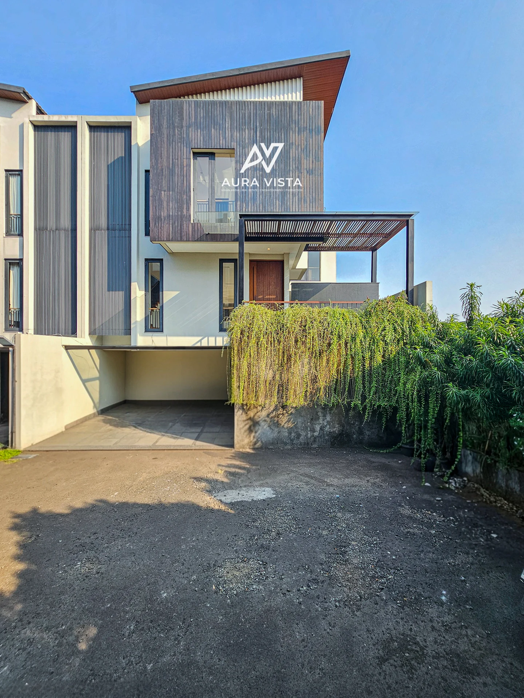

SELECTED WORK / 02JAKARTA, INDONESIA
Private residences
Cilandak
Modern lines. Quiet moments.
Architecture, in its best light.

A study of contemporary residences, where geometric facades open onto generous living spaces and still water.
- LOCATION
- South Jakarta
- DISCIPLINE
- Architecture & interiors
- COLLECTION
- 10 photographs
THE VISUAL ESSAY
A closer look.
Space. Material. Light.
Select a frame to see the whole story.
YOUR SPACE, OUR PERSPECTIVE